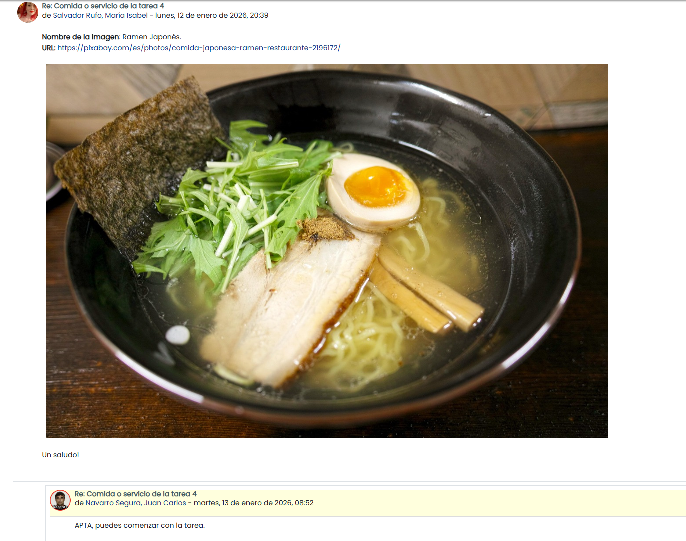
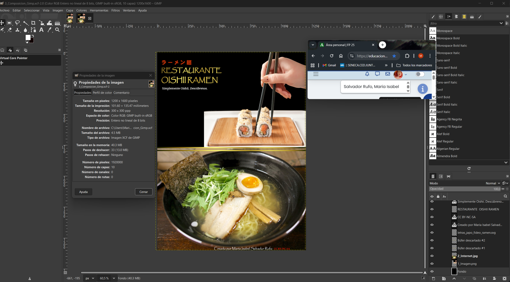
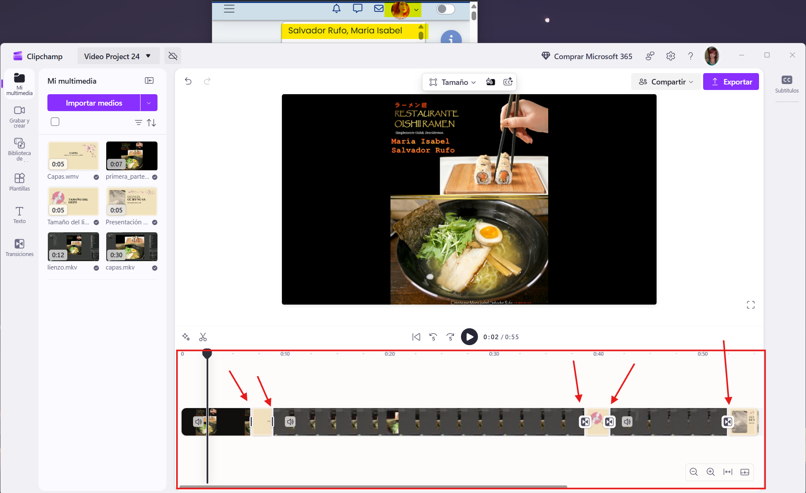

Aportación en el foro

Logo
https://www.vectorstock.com/royalty-free-vector/japan-noodle-icon-logo-design-vector-49811199
Menciona tener una licencia Royalty Free para uso
personal.
En su "free-license-attribution" indica lo siguiente:
Designed by vectorstock (Image #49811199 at VectorStock.com).
Imagen
Licencias creative commons: He elegido la licencia:
 CC BY-NC-SA
CC BY-NC-SA
Justicicación (restricciones): Al ser una imagen creada por mí tras la adaptación de otra, he decidido compartirla bajo esta licencia para permitir su difusión pero sin ser uso comercial, con las restricciones de:
- BY: Atribuciones. Hace referencia a que requiere de la referencia de la autora en mi caso.
- NC: No comercial. Hace referencia a que no sea utilizada para fines comerciales.
- SA: Compartir igual. Hace referencia a que si se modifica la imagen, la nueva creación debe tener la misma licencia.
Me he basado en esta imagen para crear la mía propia: Enlace a la imagen original
Internet
https://pixabay.com/es/photos/comida-japonesa-ramen-restaurante-2196172/
Composición

Composición 1000
Medida 1: Reducción de dimensiones: Al haber redimensionado la imagen a 1000px de ancho, se ha reducido el tamaño del archivo por tener menos píxeles. Ahora ocupa 295KB en comparación a la imagen original de 413KB.
Medida 2: Compresión con pérdida: He optado por el formato JPEG cumpliendo la finalidad de la optimización de reducir el tamaño de la imagen con la menor pérdida de calidad posible, puesto que este formato de imagen aunque pierda calidad, es una pérdida no perceptible al ojo humano en un tamaño razonable.
Composición 600
| Formato del recurso | Dimensiones (Ancho x Alto) | Tamaño (KB o MB). Usar la misma unidad de medida | |
|---|---|---|---|
| logo.svg | .svg | 128 x 128 | 14.2KB |
| 1_Imagen.png | .png | 827 x 1065 | 623KB |
| 2_Internet.jpg | .jpg | 1280 x 853 | 252KB |
| 4_Composicion.jpg | .jpg | 1200 x 1600 | 413KB |
| 5_Composicion_1000.jpg | .jpg | 1000 x 1333 | 295KB |
| 6_Composicion_600.jpg | .jpg | 600 x 800 | 139KB |
Información sobre la canción
Tipo de licencia: Licencia Pixabay (Su equivalente en la teoria es CC0 o Dominio Público)
La URL de descarga de la canción es: https://pixabay.com/music/world-traditional-japanese-4-437934/
Información sobre 1_audio.mp3 y 2_audio.ogg
Justifica las decisiones tomadas en los audios (formatos y
optimización de ficheros):
Los formatos que he elegido ha sido MP3 y OGG.
El formato MP3 lo he elegido porque es un formato muy
utilizado y además es compatible con la mayoría de dispositivos y
plataformas. Ofrece una buena calidad de sonido con el tamaño de
archivo que tiene (587KB), considerándolo relativamente pequeño.
Por otro lado, el formato OGG porque es un formato
abierto y libre de patentes que ofrece una calidad de sonido similar
al MP3. En mi caso lo he ajustado a una calidad media, para que ocupe
menos sin sacrificar la calidad.
Tabla
| Formato del recurso | Tamaño (KB o MB). Usar la misma unidad de medida | Duración (expresado en segundos) | |
|---|---|---|---|
| Canción descargada | .mp3 | 4976.64KB | 02:39 |
| 1_audio.mp3 | .mp3 | 587KB | 00:29 |
| 2_audio.ogg | .ogg | 468KB | 00:29 |
Información sobre la composición del video
- Nombre de la aplicación utilizada para la edición del video: Microsoft Clipchamp
- Nombre de las transiciones que has utilizado: He usado transiciones de "Puertas correderas vertical", ¨Barrido suave hacia la derecha" y "Cerrar".
-
Captura de pantalla con la línea de tiempo del proyecto:

Información sobre 1_video.mp4 y 2_video.webm
Justifica las decisiones tomadas en los videos (formatos y
optimización de ficheros): He elegido los formatos MP4 y WEBM para los videos.
El formato MP4 es de los más extendidos y utilizados
en la actualidad. Además, es compatible con la mayoría de dispositivos
y plataformas. Ofrece una alta tasa de comprensión con poca pérdida de
calidad ya que elimina aquello que el ser humano no es capaz de
distinguir. El tamaño de mi archivo es relativamente pequeño en este
caso (22.5MB).
Por otro lado, el formato WEBM es un formato abierto
y libre de patentes desarrollado por Google. Está pensando para ser
utilizado como formato multimedia estándar en el lenguaje HTML5. En mi
caso, es por esta razón por la que he decidido usarlo, además de que
el tamaño del archivo es menor(3.41MB sin perder apenas
calidad,mejorando la velocidad de carga en navegadores.
Tabla
| Formato del recurso | Tamaño (KB o MB). Usar la misma unidad de medida | Duración (expresado en segundos) | |
|---|---|---|---|
| Video (Presentación) | .mp4 | 0.35MB | 00:07 |
| Video (Capas) | .mkv | 3.56MB | 00:30 |
| Video (Lienzo) | .mkv | 1.18MB | 00:12 |
| 1_video.mp4 | .mp4 | 22.5MB | 00:55 |
| 2_video.webm | .webm | 3.41MB | 00:55 |